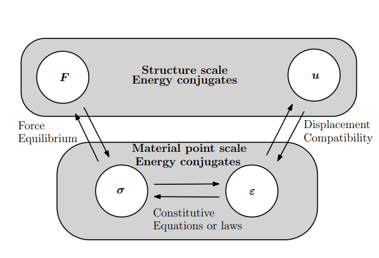
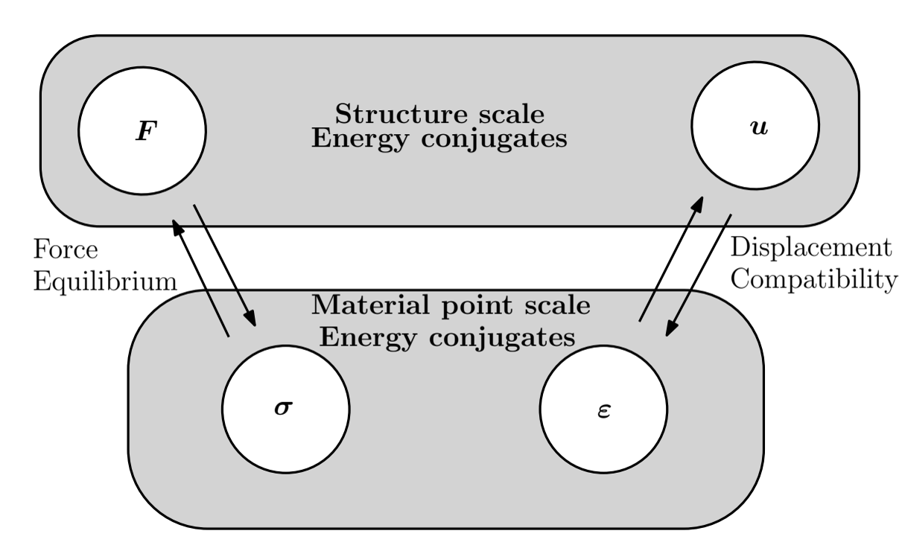

The Z-Diagram: Connecting Force, Stress, Strain, and Displacement
A unified view of equilibrium, compatibility, constitutive behavior, and energy in structural mechanics
Structural mechanics is usually taught as a sequence of separate topics:
- equilibrium,
- stress,
- strain,
- constitutive equations,
- displacement,
- compatibility,
- and energy.
Students often learn each of these correctly, yet still struggle to see how they belong to one coherent mechanical system.
The Z-Diagram is a compact framework for organizing these ideas around four fundamental quantities:
\[ F,\qquad \sigma,\qquad \varepsilon,\qquad u \]
where \(F\) is force at the structural scale, \(\sigma\) is stress at the material-point scale, \(\varepsilon\) is strain at the material-point scale, and \(u\) is displacement at the structural scale.
The purpose of the diagram is not merely to arrange four variables. It is to show how equilibrium, constitutive behavior, compatibility, and energy connect structural response to material response.
The basic structure
The standard Z-Diagram can be understood through three mechanical relations:
\[ F \longleftrightarrow \sigma \]
through force equilibrium,
\[ \sigma \longleftrightarrow \varepsilon \]
through the constitutive equation or constitutive law, and
\[ \varepsilon \longleftrightarrow u \]
through displacement compatibility.
The complete chain is therefore
\[ \boxed{ F \;\longleftrightarrow\; \sigma \;\longleftrightarrow\; \varepsilon \;\longleftrightarrow\; u } \]
with a different physical principle governing each connection.

Two analysis directions, one mechanical system
A structural problem may be approached from either end.
If the applied force is known, the reasoning may proceed as
\[ F \rightarrow \sigma \rightarrow \varepsilon \rightarrow u. \]
The applied force is first related to the internal stress field by equilibrium. The stress is then related to strain through the constitutive law, and the strain field is finally related to displacement through compatibility.
The same system can be traversed in the opposite direction:
\[ u \rightarrow \varepsilon \rightarrow \sigma \rightarrow F. \]
Here, a prescribed displacement determines strain through compatibility. The constitutive law converts strain into stress, and equilibrium relates the stress field to the corresponding force.
These are not different mechanics theories. They are simply different directions through the same set of physical relations.
For that reason, the Z-Diagram does not require separate names for the two directions. What matters is where the analysis begins and how the mechanical relations are followed until the required quantity is obtained.
Structural scale and material-point scale
The four variables naturally form two levels.
At the structural scale,
\[ (F,u) \]
describe the overall force-displacement response.
At the material-point scale,
\[ (\sigma,\varepsilon) \]
describe the local stress-strain response.
The Z-Diagram therefore connects the global response of a structure with the local response of the material.
A structural analysis is never only about forces and displacements, and a constitutive model is never useful in isolation. The two scales must communicate through equilibrium and compatibility.
Energy-conjugate pairs
The Z-Diagram also has an energy interpretation.
At the structural scale, force and displacement are an energy-conjugate pair:
\[ (F,u). \]
At the material-point scale, stress and strain form another energy-conjugate pair:
\[ (\sigma,\varepsilon). \]
For an incremental change of state, the external work is represented by
\[ dW_{\mathrm{external}} = F\,du, \]
while the corresponding internal work at the material level is
\[ dW_{\mathrm{internal}} = \int_V \sigma\,d\varepsilon\,dV. \]
For a mechanically consistent system, these two descriptions must represent the same energy transfer:
\[ \boxed{ F\,du = \int_V \sigma\,d\varepsilon\,dV } \]
under the appropriate assumptions and boundary conditions.
This equality is central to the Z-Diagram.
The force-displacement layer and the stress-strain layer are not merely analogous descriptions. They must be energetically consistent.
The principle of virtual work: what changes in the Z-Diagram?
The standard Z-Diagram includes the constitutive connection between stress and strain because a complete structural analysis normally needs it. The principle of virtual work (PVW) is different. It does not require a constitutive relation between \(\sigma\) and \(\varepsilon\).

This missing \(\sigma\)–\(\varepsilon\) connection is the important feature of Figure 2, not an omission.
For a virtual displacement \(\delta u\) that is kinematically admissible, compatibility generates a corresponding virtual strain \(\delta\varepsilon\). Independently, a statically admissible force system \(F\) is associated with a stress field \(\sigma\) through equilibrium. In schematic form,
\[ F \longleftrightarrow \sigma \qquad\text{and}\qquad \delta u \longleftrightarrow \delta\varepsilon. \]
The two sides are then connected by work:
\[ \boxed{ \delta W_{\mathrm{ext}} = F\,\delta u = \int_V \sigma\,\delta\varepsilon\,dV = \delta W_{\mathrm{int}} } \]
for the simple one-force representation used here. More generally, body forces, surface tractions, and multiple generalized forces contribute to the external virtual work, and stress and virtual strain are contracted tensorially as \(\boldsymbol{\sigma}:\delta\boldsymbol{\varepsilon}\).
The key point is that equilibrium and compatibility are independent requirements. Equilibrium says whether the force and stress fields are statically admissible. Compatibility says whether the displacement and strain fields are kinematically admissible. Neither statement by itself tells us how the material behaves.
That is why no constitutive arrow is needed between \(\sigma\) and \(\varepsilon\) in the PVW version of the diagram. The virtual strain is obtained from the virtual displacement, not from the stress. Likewise, the stress field is constrained by equilibrium, not generated from the virtual strain through a material law. The equality of virtual external and internal work connects these independently admissible fields.
This distinction is easy to miss because, when we actually solve a deformable-body boundary-value problem, equilibrium and compatibility alone are not sufficient. A constitutive law is then needed to select the physical response from the admissible fields. PVW itself, however, is a statement of mechanical balance and kinematics; it is not a stress–strain law.
The same idea written as power
There is another useful way to read the same diagram. Instead of displacement and strain, use their rates,
\[ u \rightarrow \dot u, \qquad \varepsilon \rightarrow \dot\varepsilon. \]
Force is power-conjugate to velocity, and stress is power-conjugate to strain rate. Thus the corresponding power balance is
\[ \boxed{ P_{\mathrm{ext}} = F\,\dot u = \int_V \sigma\,\dot\varepsilon\,dV = P_{\mathrm{int}}. } \]
In three dimensions,
\[ P_{\mathrm{int}} = \int_V \boldsymbol{\sigma}:\dot{\boldsymbol{\varepsilon}}\,dV. \]
This rate form makes the conjugacy especially clear. \(F\) and \(u\) are energy conjugates because \(F\,du\) is work; equivalently, \(F\) and \(\dot u\) are power conjugates because \(F\dot u\) is power. At the material-point scale, \(\sigma\) and \(\varepsilon\) are energy conjugates in the incremental sense \(\sigma\,d\varepsilon\), while \(\sigma\) and \(\dot\varepsilon\) are power conjugates through \(\sigma\dot\varepsilon\).
So the Z-Diagram can be read in two closely related forms:
\[ (F,u) \quad\leftrightarrow\quad (\sigma,\varepsilon) \qquad \text{through work}, \]
or
\[ (F,\dot u) \quad\leftrightarrow\quad (\sigma,\dot\varepsilon) \qquad \text{through power}. \]
The mechanics is the same. The rate form simply expresses the transfer instantaneously rather than over a displacement increment.
Linear elasticity as the simplest example
Consider a uniform one-dimensional bar of length \(L\), cross-sectional area \(A\), and Young’s modulus \(E\), loaded axially by a force \(F\).
Starting from force,
\[ F \rightarrow \sigma \rightarrow \varepsilon \rightarrow u, \]
equilibrium gives
\[ \sigma = \frac{F}{A}. \]
For linear elasticity,
\[ \sigma = E\varepsilon, \]
so
\[ \varepsilon = \frac{\sigma}{E} = \frac{F}{AE}. \]
Compatibility gives
\[ u = \varepsilon L, \]
hence
\[ \boxed{ u = \frac{FL}{AE} } \]
which is the familiar axial-displacement equation.
The important point is not the formula itself. The point is the sequence of mechanical ideas that produces it:
\[ \boxed{ F \overset{\text{equilibrium}}{\longrightarrow} \sigma \overset{\text{constitutive law}}{\longrightarrow} \varepsilon \overset{\text{compatibility}}{\longrightarrow} u } \]
The reverse direction
Suppose instead that the displacement \(u\) is prescribed.
Compatibility gives
\[ \varepsilon = \frac{u}{L}. \]
The constitutive law gives
\[ \sigma = E\varepsilon = E\frac{u}{L}. \]
Equilibrium then gives
\[ F = \sigma A = \frac{EA}{L}u. \]
Thus,
\[ \boxed{ F = \frac{EA}{L}u } \]
and the same mechanical system has been traversed in the opposite direction:
\[ \boxed{ u \overset{\text{compatibility}}{\longrightarrow} \varepsilon \overset{\text{constitutive law}}{\longrightarrow} \sigma \overset{\text{equilibrium}}{\longrightarrow} F. } \]
Energy equivalence in the one-dimensional bar
For the same linear bar, the structural strain energy is
\[ U_{\mathrm{external}} = \frac{1}{2}Fu. \]
At the material level,
\[ U_{\mathrm{internal}} = \int_V \frac{1}{2}\sigma\varepsilon\,dV. \]
For a uniform bar,
\[ U_{\mathrm{internal}} = \frac{1}{2}\sigma\varepsilon AL. \]
Using
\[ \sigma=\frac{F}{A} \]
and
\[ \varepsilon=\frac{u}{L}, \]
we obtain
\[ U_{\mathrm{internal}} = \frac{1}{2} \left(\frac{F}{A}\right) \left(\frac{u}{L}\right) AL = \frac{1}{2}Fu. \]
Therefore,
\[ \boxed{ U_{\mathrm{external}} = U_{\mathrm{internal}} } \]
as required.
The equality of the two energy descriptions is not an extra result added after the mechanics is solved. It is a consistency condition linking the two levels of the diagram.
Beyond linear mechanics
The Z-Diagram is not restricted to linear elasticity.
The equilibrium relation may be linear or nonlinear. The compatibility relation may involve small or finite deformation. The constitutive relation may describe nonlinear elasticity, plasticity, damage, viscoelasticity, fracture-related constitutive behavior, or other material models.
In a nonlinear problem, the familiar triangular energy expression
\[ \frac{1}{2}Fu \]
is generally replaced by the work integral
\[ W_{\mathrm{external}} = \int F\,du. \]
Likewise, internal work is expressed more generally as
\[ W_{\mathrm{internal}} = \int_V \left( \int \sigma\,d\varepsilon \right)dV. \]
The central structure remains unchanged:
\[ \boxed{ \text{equilibrium} \quad+\quad \text{constitutive behavior} \quad+\quad \text{compatibility} } \]
with energetic consistency between the structural and material-point descriptions.
Why the Z-Diagram is useful
The Z-Diagram provides a compact answer to a question that appears repeatedly in mechanics:
How do forces applied to a structure eventually become displacements?
The answer is not a single equation.
Force must first be converted into an internal stress state through equilibrium. Stress must be related to strain through a constitutive model. Strain must then satisfy compatibility with the displacement field.
The reverse reasoning is equally valid.
That makes the diagram useful for distinguishing clearly between equilibrium equations, constitutive equations, compatibility equations, global structural quantities, local material quantities, and energy-conjugate variables.
It also provides a common framework for understanding methods that may initially appear unrelated. Classical mechanics of materials, structural analysis, finite element analysis, nonlinear mechanics, and constitutive modeling all operate within the same basic structure.
A framework rather than a formula
The Z-Diagram should not be viewed as another formula to memorize.
Its purpose is organizational.
It provides a way to ask, at any point in a mechanics problem:
- What quantity do I know?
- At what scale is it defined?
- Which physical law connects it to the next quantity?
- Am I using equilibrium, a constitutive law, or compatibility?
- Is the energy representation consistent between the structural and material scales?
Once these questions are explicit, many mechanics derivations become easier to interpret.
The mathematical details may change from one problem to another.
The structure of the reasoning does not.
Takeaway
The Z-Diagram connects four fundamental mechanical quantities,
\[ \boxed{ F,\quad \sigma,\quad \varepsilon,\quad u } \]
through three essential relations: force equilibrium, constitutive behavior, and displacement compatibility.
When proceeding from force to displacement, the sequence is
\[ F \rightarrow \sigma \rightarrow \varepsilon \rightarrow u, \]
and when proceeding from displacement to force, the sequence is reversed.
At the same time,
\[ (F,u) \]
and
\[ (\sigma,\varepsilon) \]
form energy-conjugate pairs at the structural and material-point scales.
The energy represented at these two levels must be consistent.
The principle of virtual work reveals an additional point that is hidden in the usual \(F \leftrightarrow \sigma \leftrightarrow \varepsilon \leftrightarrow u\) chain: equilibrium and compatibility can be stated independently of the constitutive law. A statically admissible stress field and a kinematically admissible virtual displacement field meet through virtual work, not through a \(\sigma\)–\(\varepsilon\) material relation. In rate form, the same statement becomes a power balance between \((F,\dot u)\) and \((\sigma,\dot\varepsilon)\).
That combination of equilibrium, compatibility, constitutive behavior, scale, work, and power is the core idea of the Z-Diagram.